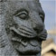
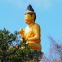

滋賀県
＃308 木之本地蔵
鋳造製大仏時代末期の代表作。でも足元には…
＃298 玉桂寺
境内全域真っ赤っ赤！色の洪水に溺れそう。
 ＃113 佐和山遊園
＃113 佐和山遊園
造りまくれ〜！オノレのその脳内世界を！
意外な過去を持つ新人大仏
＃205-B 萬福寺の普度勝会
華僑の人達の冥界はリアリズムに満ちてました…
珍寺虎の穴で出会った素敵なお宅拝見。
若狭湾近辺にあるハデハデ地蔵大行進！！
達磨、だるま、ダルマだらけ・・・
観音様の胎内は骨太でした・・・
＃412 若宮さん
祭りの終盤に登場する謎の神様の正体とは？
仏像が歩くよ！踊るよ！
＃363 磐船神社
ハードな岩窟めぐりで精神状態をミニマル化せよ！
＃276 家原寺
現代社会でもっとも切実な願い事（かもしれない）合格祈願の寺！
 ＃253 水掛不動尊
＃253 水掛不動尊
大阪のど真ん中にある熱帯雨林不動！
子供こどもコドモだらけの供養塔・・・
山の中に展開する仏像ワンダーランド！
コレはお寺なのか？不思議な山門を潜るとそこには・・・
 ＃009 石切神社
＃009 石切神社
 ＃426 名古山霊苑
＃426 名古山霊苑
巨大インド風ストゥーパと目くるめく超絶仏教世界にまつわるエトセトラ

＃424 西光寺
様々なエレメントが渦巻くカオスの曼陀羅！
＃326 兵庫大仏
日本三大仏の一翼を担う大仏。でもお父ちゃんの方がグレイトやで。
＃325 鵯越大仏
霊園の中にある戦前生まれの大仏さん。よ〜く見てみると…
超濃密な石像ワールド。かかってこい！
宇宙の果てまでGO!お地蔵さんピラミッドパワー！
＃491 和歌の浦の謎大仏
景勝地で偶々見つけた大仏、アプローチがハード過ぎ！
＃388 鎌八幡宮
ご神木に刺さりまくる大量の鎌！見てるだけで痛くなってきます…
＃329 恐竜洞窟極楽洞
本邦最先端の立体地獄にはハイテクギミックが満載…か？
あまりにも凄いところにあるセルフ弁財天！
ビルマ仏が並ぶ堂内にあるのは「地獄」「極楽」「戦争」「平和」。
真言密教の聖地！でもそこにあるのは変な墓地。
珍寺大道場 HOME